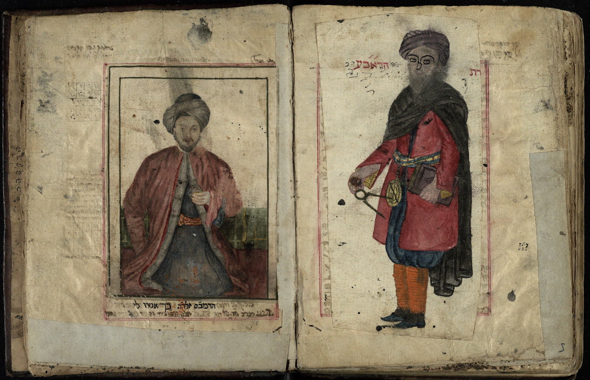
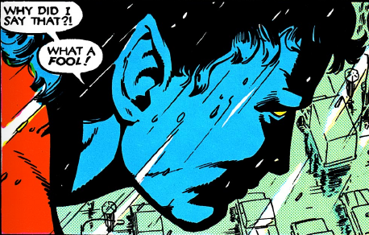
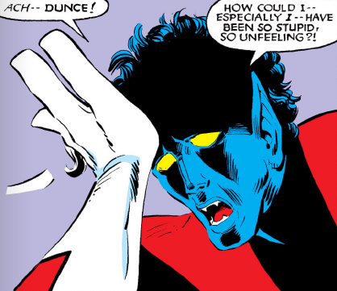
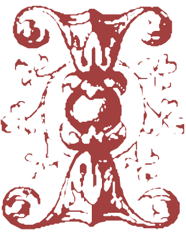

Maimonides on Thursdays
How precious are the words of the great R. Moses, few in number yet speaking volumes, who wrote about this world [i.e., the World to Come] in his commentary on chapter Helek. He said that in the World to Come our souls will apprehend secrets of the Creator in the same way they apprehend, in this world, secrets of the stars and spheres, or even more. They [the Sages] similarly said that the World to Come has neither eating nor drinking, the righteous sit with crowns on their heads and bask in the radiance of the Shekhinah.

Could we begin with a “Didn’t the Rambam say kishuf in Mitzrayim wasn’t real?”

Every Thursday class left me with the same question: how do you teach non-Christian philosophy to an audience that hasn’t been, and probably won’t be, educated in any religious language (if it has been educated even in Christian language at all), so that they can read and understand philosophical questions rooted in non-Western traditions?
This led me to keep repeating that “Thursday’s class could really get to the point and go through the Kotzker, Munkatch, Klausenburg, the Gr”a and Rav Kapach on sheidim (demons) and kishuf (magic). A simple ‘Didn’t the Rambam say kishuf in Mitzrayim wasn’t real?’ would do the trick,“3 until I finally realized it probably wouldn’t work at all.4 In the end, not only is this not a yeshiva class, but the students always need endless introductions:”What is Sephardic Judaism?“,”What is halakha?“,”How does Jewish religion even work?“.
Jan Westerhoff’s Nāgārjuna’s Madhyamaka: A Philosophical Introduction offers an interesting hint at this kind of problem. Wittgenstein is basically the fun part of Nāgārjuna (the tetralemma, pratītyasamutpāda, svabhāva, śūnyatā, the Naiyāyika idea that every negation implies an affirmation, linguistic pragmatism, Madhyamaka and so on) without the boring parts (the endless refutations of other buddhist traditions). It’s the only instance of the comparative method that I’m willing to approve, because Westerhoff basically solves the problem of having to teach people endless schools of an already misunderstood religious tradition.

“You gotta believe in yourself?” No, not really, only knowledge remains: R. Yosef Kapach
According to R. Fox, one of the key themes of emuna already discussed in the Mishneh Torah and other works of Maimonides appears in Shabbat 31a, which lists the six questions a person is asked at the Judgment. One of them is “ציפית לישועה?” (“Did you await salvation [redemption]?”), a tradition many understand as the duty to anticipate the Mashiach’s coming every day. This expectation also dialogues with the twelfth of the so-called Thirteen Principles of the Rambam.
A caveat on vocabulary: the Rambam does not use “Yesodei Emuna” (יסודי אמונה) as a technical title of his own. What he uses, precisely, is “Yesodei ha-Torah” (יסודי התורה, in the Mishneh Torah) and, in the Perek Chelek (פרק חלק), he speaks of ikkarim (עיקרים) and “yesodei ha-dat” (יסודי הדת). “Yesodei emuna” is a later, editorial formulation, very common in popular editions.
The Rambam opens Hilchot Yesodei ha-Torah 1:1 with the following formulation:
יסוד היסודות ועמוד החכמות לידע שיש שם מצוי ראשון
“The foundation of foundations and the pillar of wisdom is to know that there is a First Being (substância primeira, algo particular, in the portuguese translation).”6 From the very opening of the Mishneh Torah, then, the emphasis falls on yedia (knowledge), not on a vague or merely subjective belief.
In the Sefer ha-Mitzvot, older Hebrew editions used to render the Arabic as “להאמין” (to believe). But the Rambam writes i’tiqād in Arabic, and R. Yosef Kapach, in his critical translation, renders it as “לידע/להכיר”: to know, to ascertain by reason the existence of G-d. The emphasis is cognitive (intellectual), not mere subjective assent.7
The upshot: there is, in the Rambam, a radical difference between speaking of foundations or principles (ikkarim, yesodot) that must be known and understood, and speaking (in later language) of “principles of faith” as simple objects of belief. For the Rambam, the ideal is that these principles be known and understood, that is, grounded in reason.8
Olam ke-minhago noheg: Maimonides and the Raavad

Seven things were created before the world was created: the Torah, repentance (teshuva), the Garden of Eden, Gehenna, the Throne of Glory, the Temple, and the name of the Messiah. (Pesachim 54a)
שבעה דברים נבראו קודם שנברא העולם: תורה, ותשובה, וגן עדן, וגיהנם, וכיסא הכבוד, ובית המקדש, ושמו של משיח.
In Hilchot Melachim u-Milchamot 12:1–2, Maimonides sets out the principle that, in the days of the Mashiach, the natural order remains unchanged (olam keminhago noheg) and there is no “novelty in the work of Creation.” Consistently with this, the prophetic description of Isaiah 11:6 (“the wolf with the lamb”) is taken as figurative language signaling peace and social harmony, not as literal. The axis of change, therefore, lies on the historical-political and halakhic plane: the end of the yoke of the nations, the restoration of sovereignty, the rebuilding of the Mikdash, the return of the Shekhina, and the reactivation of Temple-dependent commandments.
Mishneh Torah, Hilchot Melachim u-Milchamot (הלכות מלכים ומלחמות) 12:1–2
“Let it not occur to you [to think] that, during the days of the Mashiach, [even] a single thing of the ‘ways of the world’ [the natural order of things] would be cancelled, or that there will be anything new in Creation. Rather, [during the days of the Mashiach] the world will continue in its usual way (olam keminhago noheg). As for what is said in Isaiah 11:6, ‘the wolf shall dwell with the lamb, and the leopard shall lie down with the kid,’ it is a parable and a riddle.”
The Raavad, in his hasagot, records an objection based on Leviticus 26:6 (“And I will remove evil beasts from the land”), stressing that this is a verse of the Torah. The methodological point is that, unlike the usual imagery in the Prophets, a statement of the Torah should not be dismissed as mere metaphor; at the very least, it demands a concrete effect in the reality described. The tension, then, is not only between “metaphor” and “literalness,” but between domains: the Rambam comprehensively codifies the continuity of the natural course and therefore systematically reads Isaiah non-literally, whereas the Raavad demands that the promise formulated in the Torah translate into some verifiable form, even if its fulfillment is understood as the restoration of a prior state (and not the creation of a new nature).
Hasagot ha-Raavad on Rambam, Mishneh Torah, Hilchot Melachim 12:1
“Let it not occur to you that in the days of the Messiah, etc., until ‘parables and riddles.’” Raavad: “But it is written in the Torah: ‘And I will remove evil beasts from the land’ (Lev. 26:6).”
לא יעלה על הלב שבימות המשיח וכו’ עד משלים. א״א: והלא כתוב בתורה והשבתי חיה רעה מן הארץ (ויקרא כו, ו).
A brisker nuance (attributed in the masora to the Brisker Rav) reinforces the force of the Raavad’s argument: according to the Rambam himself (Yesodei ha-Torah), Moshe’s prophecy does not come “בְּמָשָׁל וְחִידָה” (in parable and riddle); hence verses of the Torah would tend to be literal. How, then, would the Rambam deal with “וְהִשְׁבַּתִּי חַיַּה רָעָה”?